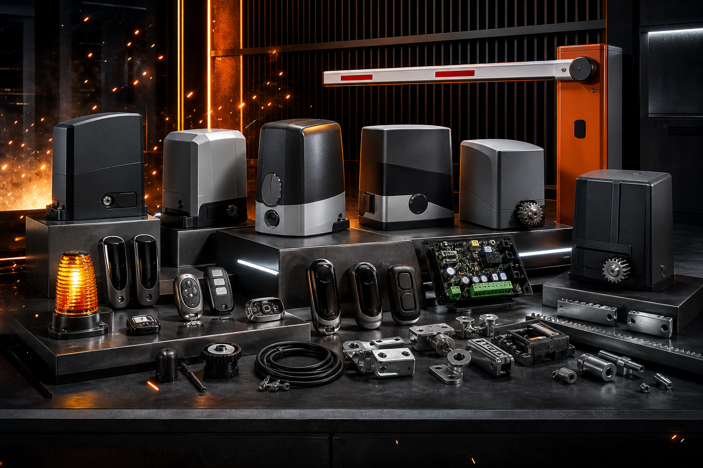
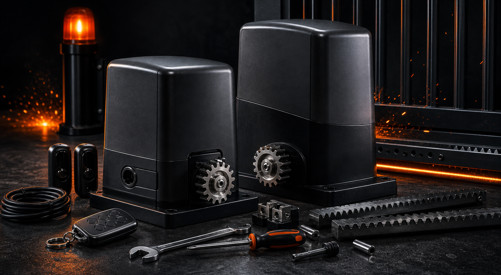
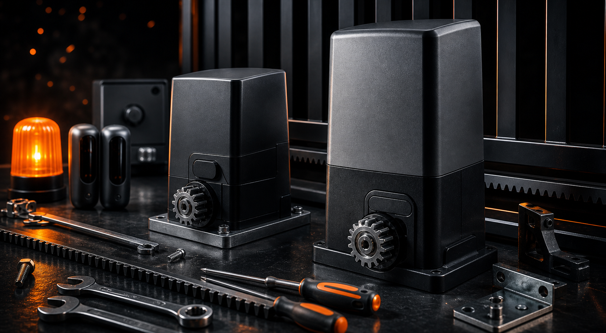
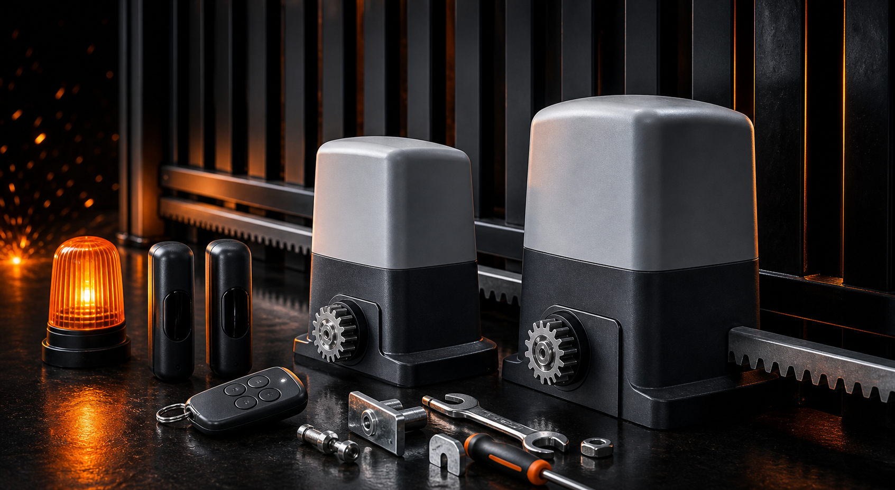
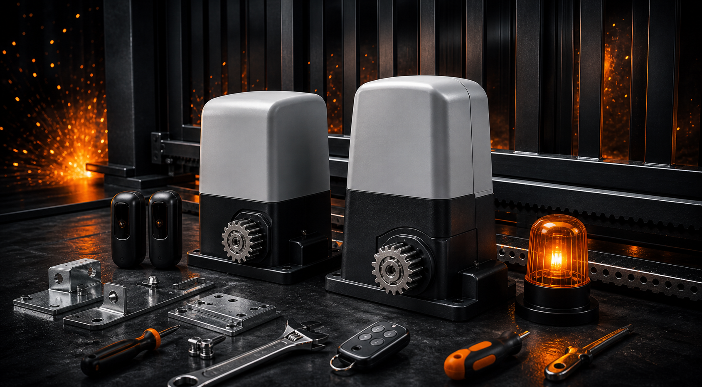
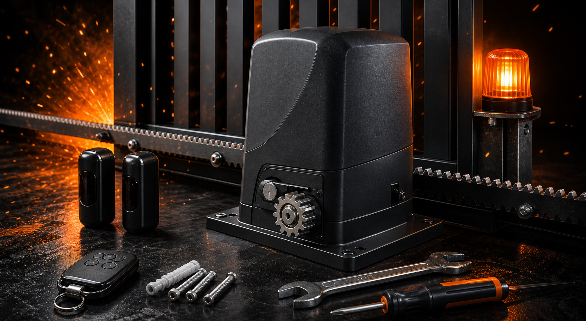
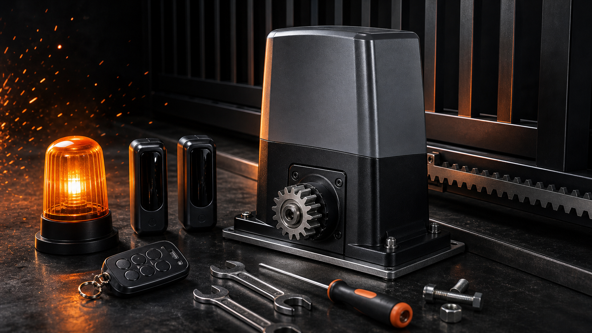

AutoGatesPro · Москва и Московская область
Ремонт автоматики ворот
Срочный выезд по Москве и Московской области
Приводы, двигатели, платы управления, концевики, тросы, пружины, фотоэлементы, пульты, приёмники, питание и проводка.
Для быстрой диагностики отправьте город, бренд автоматики и короткое видео работы ворот.
Доверие
1398 выполненных заказов
Реальные цифры работы AutoGatesPro по ремонту автоматики ворот, шлагбаумов и рольставней.
Типовые обращения
Частые проблемы автоматики ворот
Выберите похожий симптом и отправьте видео. Так мастер быстрее поймёт вероятную причину и подготовится к выезду.
Привод / двигатель
Автоматика гудит, срабатывает через раз или ворота идут рывками.
- ворота не тянет;
- двигатель греется;
- полотно останавливается.
Плата управления
Ворота не реагируют на команды, автоматика сбрасывает настройки или работает хаотично.
- после скачка напряжения;
- после влаги;
- не включается привод.
Концевики
Сбилась настройка хода: ворота не доходят до конца или упираются с усилием.
- не закрываются до конца;
- самопроизвольно откатываются;
- сбился предел хода.
Тросы и пружины
Частая проблема секционных ворот: полотно перекашивает, тяжело идёт или застревает.
- порвался трос;
- лопнула пружина;
- ворота идут неровно.
Фотоэлементы
Система безопасности блокирует закрытие или ворота открываются обратно.
- луч не видит препятствие;
- ворота не закрываются;
- ошибка после дождя или снега.
Пульты / приёмники
Пульт не открывает ворота, работает только рядом или не прописывается в память.
- не работает брелок;
- слабый сигнал;
- сбой приёмника.
Питание / проводка
Проблемы с кабелем, контактами, автоматом питания или повреждением проводов.
- нет питания;
- выбивает автомат;
- периодические отказы.
Автоматика ворот
Ремонтируем популярные бренды автоматики
Работаем с распространённой автоматикой для откатных, секционных, распашных ворот, шлагбаумов и рольставней.
Работаем с популярной автоматикой ворот и шлагбаумов







Не нашли свой бренд? Отправьте фото автоматики в WhatsApp или Telegram.
Повторные обращения
Почему нас вызывают повторно
973 повторных клиента — это главный сигнал доверия. Люди возвращаются после ремонта, вызывают на сезонное ТО, рекомендуют соседям по СНТ и управляющим парковок.
не навязываем замену рабочих узлов
объясняем причину поломки простым языком
после ремонта даём рекомендации по ТО
работаем с частными и коммерческими объектами
География выезда
Где работаем
Выезжаем по ключевым направлениям Москвы и Московской области. Если ваш посёлок или СНТ рядом с одним из направлений, напишите город и ориентир — подскажем ближайшее окно.
Ярославское направление
Мытищи, Королёв, Пушкино, Сергиев Посад, Ивантеевка, Софрино, Правдинский
Дмитровское направление
Долгопрудный, Лобня, Икша, Яхрома, Дмитров
Ленинградское направление
Химки, Сходня, Зеленоград, Чёрная Грязь, Солнечногорск
Щёлковское направление
Щёлково, Фрязино, Монино, Лосино-Петровский
Горьковское направление
Балашиха, Железнодорожный, Реутов, Старая Купавна, Ногинск
Практика выездов
Последние выполненные работы
Примеры последних обращений без лишних технических подробностей.
Откатные ворота
Ворота не открывались с пульта.
Секционные ворота
Полотно перекосило, ворота остановились.
Шлагбаум
Стрела не поднималась после сбоя.
Откатные ворота
Ворота закрывались и открывались обратно.
Автоматика Nice
Привод гудел, но створка не двигалась.
Рольставни
Полотно застряло в нижнем положении.
Как получить быстрый ответ
Что отправить мастеру
Чем точнее первое сообщение, тем быстрее можно понять вероятную причину поломки и подготовиться к выезду.
городтип воротбренд автоматикисимптомфото приводакороткое видео
Связаться с мастером
Опишите поломку и получите ближайшее окно выезда
Сообщите город, бренд автоматики и симптом. Если есть возможность, отправьте видео работы ворот.